Índice
HTML
(Voltar)
O HTML, abreviação de HyperText Markup Language ou Linguagem de Marcação de
HiperTexto, é uma linguagem amplamente utilizada para criar e organizar o
conteúdo em páginas da web. Embora não seja classificado como uma linguagem
de programação, desempenha um papel fundamental na construção de páginas da
web estáticas. Em vez de lidar com funcionalidades dinâmicas, o HTML
permite que os usuários estruturem e apresentem informações por meio de
elementos, tags e atributos. Ele representa a base essencial para a maioria
das páginas da web, sendo responsável por definir a estrutura e o conteúdo
de uma página, abrangendo desde a formatação de texto até a incorporação de
imagens, a criação de links e a adição de outros elementos interativos.
Ferramentas utilizadas
(Voltar)
O Visual Studio Code é um editor de código amplamente utilizado e
gratuito, conhecido por seus recursos robustos que atendem aos
desenvolvedores web. Abaixo, apresentamos as etapas iniciais para iniciar o
uso do HTML no Visual Studio Code:
- Instale o Visual Studio Code
Caso não tenha o Visual Studio Code instalado, pode baixá-lo e instalá-lo
gratuitamente no site oficial: https://code.visualstudio.com/. Basta seguir as
instruções de instalação adequadas para o seu sistema operacional.
- Abra o Visual Studio Code
Após a instalação, abra o Visual Studio Code em seu computador. A
interface do Visual Studio Code será exibida na sua tela
- Crie um novo arquivo HTML
Para criar um novo arquivo HTML, siga estas etapas:
- Clique em "File" (Arquivo) no canto superior esquerdo.
- Selecione "New File" (Novo Arquivo).
- Nomeie o novo arquivo.
- Salve o arquivo com a extensão ".html" (por exemplo, "index.html")
para indicar que é um arquivo HTML.
- Comece a escrever o código HTML
Agora que o arquivo HTML em branco está aberto no Visual Studio Code,
você pode começar a escrever código HTML. Aqui está um exemplo simples:

- Personalize e edite seu código
Pode editar o conteúdo HTML de acordo com suas necessidades. À medida
que você digita, o Visual Studio Code oferece sugestões e realces de
sintaxe para facilitar a codificação.
- Visualize sua página
Para visualizar a sua página da web no navegador, siga estas instruções:
- Clique com o botão direito do mouse no arquivo HTML no painel de
arquivos à esquerda.
- Se você tiver a extensão 'Live Server' instalada, clique em 'Abrir
com Live Server'. Essa é uma extensão popular que possibilita
visualizar sua página web localmente em tempo real enquanto faz
alterações. Se não tiver a extensão instalada, basta abrir o
arquivo HTML no seu navegador utilizando a opção 'Abrir com
Navegador Padrão'.
- Salve seu trabalho
Lembre-se de salvar seu trabalho periodicamente pressionando "Ctrl + S"
(Windows/Linux) ou "Cmd + S" (macOS) ou configure o salvamento
automático.
O Visual Studio Code proporciona uma ampla variedade de recursos
adicionais, incluindo extensões que simplificam o desenvolvimento web,
integração de depuração de código e controle de versão. À medida que você
se torna mais experiente, pode explorar esses recursos para aprimorar
ainda mais sua eficiência na criação de páginas da web com HTML no Visual
Studio Code.
Inspetor de elementos
(Voltar)
A função "inspecionar elemento" é uma ferramenta poderosa disponível em
navegadores da web como o Google Chrome, Mozilla Firefox, Opera e outros.
Ela proporciona insights sobre a estrutura e o funcionamento de páginas da
web, permitindo que desenvolvedores e usuários examinem e analisem o código
HTML, CSS e JavaScript de uma página da web em tempo real. Essa
funcionalidade é muito útil para diversas finalidades:
-
Depuração de páginas da web: Os desenvolvedores utilizam a função
"inspecionar elemento" para identificar e resolver questões
relacionadas ao design, estilo e funcionamento de seus sites. Isso
lhes permite visualizar como o código está sendo interpretado pelo
navegador e realizar ajustes imediatos quando necessário.
-
Aprendizado e educação: Estudantes e entusiastas da web podem utilizar
essa funcionalidade para analisar a estrutura e o estilo de diversos
elementos em uma página. Isso contribui para a compreensão do
processo de construção de sites.
-
Teste de design responsivo: A funcionalidade "inspecionar elemento"
possibilita que os usuários simulem diferentes visualizações em
dispositivos variados, como smartphones e tablets. Isso ajuda a
assegurar que um site seja responsivo e capaz de se adaptar a
diferentes tamanhos de tela.
-
Extração de informações: Embora não seja sua principal finalidade, os
usuários também podem utilizar essa funcionalidade para examinar o
código-fonte de uma página e, em alguns casos, fazer modificações
temporárias, como editar o texto exibido em um site.
-
Análise de desempenho: Os desenvolvedores podem empregar a
funcionalidade "inspecionar elemento" para avaliar o desempenho de uma
página da web, identificando potenciais elementos que podem estar
prejudicando o carregamento da página, como scripts muito pesados ou
imagens não otimizadas.
Para abrir a ferramenta de inspeção em um dos navegadores da web, você pode
seguir um das duas opções a seguir:
- Depois de abrir o navegador de sua preferência, acesse qualquer site,
como o Google, e clique com o botão esquerdo do mouse. Na página que
surgir, vá até a seção final e selecione a opção "inspecionar
elemento".
- Pressione as teclas Ctrl + Shift + I no Windows ou Cmd + Option + I
no Mac para acessar a ferramenta rapidamente;
Você pode realizar edições diretas no código e nos estilos dentro da
ferramenta de inspeção e ver como essas mudanças afetam a aparência e o
comportamento da página. No entanto, é importante notar que essas
modificações não afetam o site original; elas são visíveis apenas para você.
Estrutura básica do HTML
(Voltar)
Vamos analisar a estrutura do HTML:

O elemento head é uma parte essencial do HTML, destinada a fornecer
informações que não são diretamente visíveis aos usuários ou visitantes do
site. Ele desempenha um papel crucial no funcionamento e na apresentação
da página, sendo interpretado tanto pelo navegador quanto pelos
mecanismos de busca. Vamos agora explorar algumas das tags e elementos
mais comuns encontrados dentro do head:
-
meta: Esta tag é usada para fornecer metadados, que são
rótulos que oferecem informações sobre a página sem alterar o conteúdo
real da mesma.
-
title: O elemento title define o título da página e é
exibido na barra de título do navegador. É uma parte importante para
identificar o conteúdo da página.
-
script: O elemento script é utilizado para incluir
scripts JavaScript, permitindo a adição de funcionalidades interativas à
página. Também pode ser usado para incorporar scripts CSS, embora seja
mais comum para JavaScript.
-
style: Embora seja possível usar o elemento style para
incorporar estilos CSS diretamente na página, é geralmente recomendável
evitar isso. Em vez disso, é preferível criar um arquivo separado, como
style.css, para melhorar a organização e manutenção do código, além de
separar claramente a estrutura do conteúdo da aparência da página.
(Voltar)
Tags em HTML são usadas para definir e estruturar o conteúdo de uma página
da web. As tags HTML são envolvidas em colchetes angulares ("< >") e
geralmente vêm em pares, com uma tag de abertura e uma tag de fechamento.
Aqui estão algumas tags HTML comuns e seus propósitos:
-
html: Define o elemento raiz de um documento HTML.
-
link: Estabelece relações entre o documento atual e
recursos externos, como folhas de estilo.
-
body: Contém o conteúdo visível da página da web,
incluindo texto, imagens e outros elementos.
-
h1, h2, h3, h4, h5, h6: Contém o conteúdo visível da
página da web, incluindo texto, imagens e outros elementos.
-
p: Representa um parágrafo de texto.
-
a: Cria hiperlinks para outras páginas da web ou
recursos.
-
img: Inclui imagens no documento.
-
ul: Define uma lista não ordenada (com marcadores).
-
ol: Define uma lista ordenada (numerada).
-
li: Representa um item de lista dentro de ul ou ol.
-
strong: define o texto em negrito.
-
i: define o texto em itálico
-
u: define o texto em sublinhado.
(Voltar)
No HTML, as tags podem ter vários atributos que fornecem informações
adicionais sobre o elemento ou controlam seu comportamento. Aqui estão
alguns exemplos de atributos comuns usados em tags HTML:
-
Atributo id: Define um identificador exclusivo para
um elemento na página. O valor id deve ser unico em todo documento,
ou seja, em um documento HTML, não deve haver dois elementos com o mesmo
valor no atributo id.
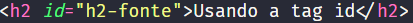
-
Atributo src: Usado em elementos como img e
script para especificar a origem do recurso a ser incorporado na
página.
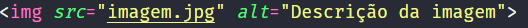
-
Atributo alt: Usado em elementos img para
fornecer um texto alternativo que é exibido se a imagem não puder ser
carregada ou para acessibilidade.
-
Atributo href: Usado em elementos como a para
definir o URL de destino do link.
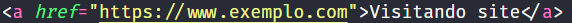
-
Atributo title: Fornece um texto que é exibido
quando o mouse para em cima do elemento.
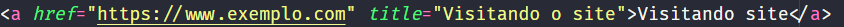
Textos
(Voltar)
No HTML, você pode usar várias tags para exibir texto em uma página da web.
Aqui estão algumas das tags mais comuns para exibir texto:
-
p: Parágrafo
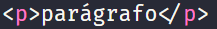
-
h1, h2, h3, h4, h5, h6: Cabeçalhos
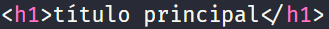
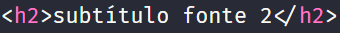
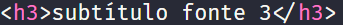
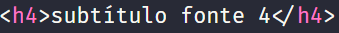
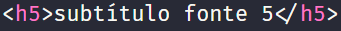
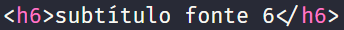
-
strong: Negrito
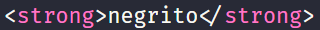
-
em, i: Itálico
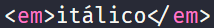
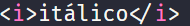
-
u: Sublinhado
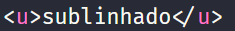
-
br: Quebra de linha
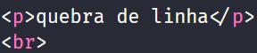
Assim como irá ficar:
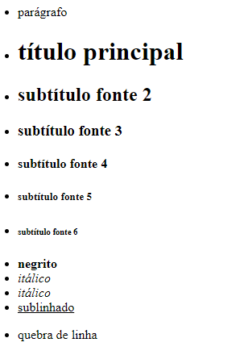
Listas ordenadas e não ordenadas
(Voltar)
As listas ordenadas são usadas quando você deseja criar uma lista com itens
que têm uma ordem específica, como uma lista numerada, enquanto as listas
não ordenadas são usadas para criar listas de itens sem uma ordem
específica, geralmente marcadas com pontos ou outros marcadores.
Aqui estão exemplos de como criar listas ordenadas e não ordenadas em HTML:
Listas ordenadas
Criada usando o elemento ol e seus itens são definidos com o
elemento li.
O código ficaria assim:
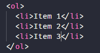
A exibição no navegador ficaria assim:
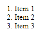
Listas não-ordenadas
Uma lista não ordenada é criada usando o elemento ul, e seus itens
também são definidos com o elemento li.
O código ficaria assim:
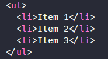
A exibição no navegador ficaria assim:
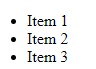
Links
(Voltar)
Você pode criar links usando a tag a. A tag a é usada para
criar hiperlinks para outras páginas da web, arquivos, endereços de e-mail
e muito mais. Aqui está a estrutura básica de um link HTML:
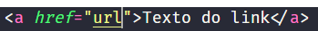
Aqui está uma explicação dos atributos utilizados na tag :
-
href: Este é o atributo que define o destino do link.
Pode ser uma URL (endereço da web), o nome de um arquivo, um endereço de
e-mail, ou até mesmo um identificador para uma âncora em uma página.
-
Textos dos links: Isso é o que é exibido na página da
web como o texto clicável. Pode ser qualquer texto que você queira que
seja exibido como o link.
Aqui estão alguns exemplos de como criar links HTML:
-
Link para uma página web:
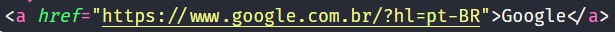
-
Link para um arquivo local (por exemplo, um arquivo PDF):
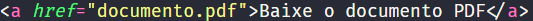
-
Link para um endereço de e-mail:
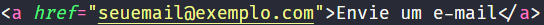
-
Link para uma âncora em uma página (o # é seguido pelo identificador
da mesma):
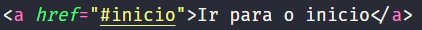
Lembre-se de substituir "URL" pelo endereço da web ou nome do arquivo
desejado, e "Texto do Link" pelo texto que você deseja que apareça como o
link. Isso é o básico de como criar links em HTML. Você pode estilizar e
personalizar os links usando CSS para se adequar ao design do seu site.
Referências
(Voltar)